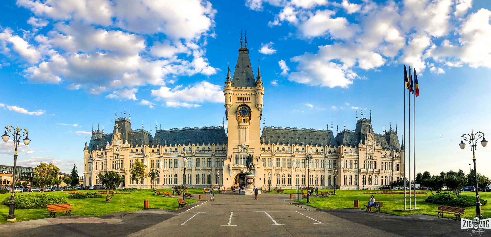

WoLLIC is a series of workshops which started in 1994 with the aim of fostering interdisciplinary research in pure and applied logic. The idea is to have a forum which is large enough in the number of possible interactions between logic and the sciences related to information and computation, and yet is small enough to allow for concrete and useful interaction among participants.
Please distribute the call for papers.
WoLLIC 2022 takes place at the Alexandru Ioan Cuza University in Iaşi, Romania. The Alexandru Ioan Cuza University is the oldest higher education institution in Romania, founded in 1860. The university currently has over 24 000 students and around 800 academic staff. The beautiful city of Iaşi is known as the cultural capital of Romania and it has a vibrant and rich cultural, educational, social, and artistic life.
The easiest way to reach Iaşi is via its international airport, situated close to the city. The airport services multiple direct flights each week to various international destinations, including: London, Vienna, Rome, Paris, Madrid, Brussels, Tel Aviv, Munich, Cologne, Larnaca, Glasgow, Barcelona, Valencia, Bergamo (Milan), Turin, Florence, Catania, Treviso (Venice). Also, several direct flights are operated daily to and from Bucharest Otopeni airport (flight time: less than 1h), the main air transport hub in Romania. Find more information on the Iași airport website. To reach Iaşi city center from the airport, the best way is by taxi. The fare takes around 15 minutes and should cost around 25 RON (about 5 euros). A taxi station is located just outside the airport terminals (you will see a long line of taxis -- you must take the first one). The price per kilometer of all taxi companies in Iaşi is around 2.5 Lei/kilometer during day time with a similar starting fee (equivalent of about 0.5 Euro). As a cheaper but significantly less convenient alternative, bus number 50 connects the airport to the city center. The bus stop is next to the taxis. There is typically one bus every couple of hours, and the depature/arrival schedule is usually synchronized with airplane arrivals/departures. The price for a single trip is 2.5 RON. The simplest way to get tickets is to use a contactless debit/credit card (non-conctactless will not work) and buy them directly in the bus from the automated vending machines.
Romania is part of the European Union. Citizens of a number of countries require a visa to enter Romania. Detailed information including the process to obtain a visa can be found on the site of the Romanian Ministry of Foreign Affairs. Typically, the visa that would be required for attending a conference is a short-stay visa of type C/ZA. If you need an invitation letter for obtaining a visa please contact us the organizers as soon as possible.
WoLLIC 2022 is organized by:
Student ASL members may apply for Student Travel Awards.
It is planned to have a special session with the exhibition of a one-hour documentary film about a remarkable mathematician who is considered a father of modern differential geometry. "Taking the Long View: The Life of Shiing-shen Chern" (George Scisery, 2011) examines the life of a remarkable mathematician whose formidable mathematical contributions were matched by an approach and vision that helped build bridges between China and the West. The biographical documentary follows Shiing-shen Chern (1911-2004) through many of the most dramatic events of the 20th century, portraying a man who dedicated his life to pure mathematics with the style of a classical Chinese sage. (zalafilms.com)
For organizational matters, please contact: stefan.ciobaca@gmail.com or ruy@cin.ufpe.br.
{kind=link}